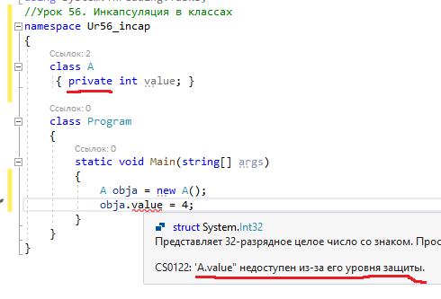
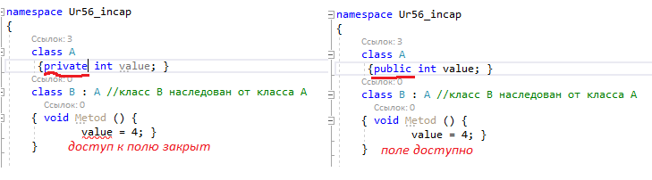
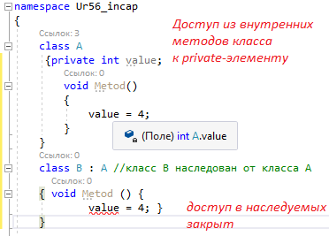
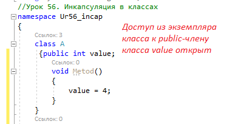
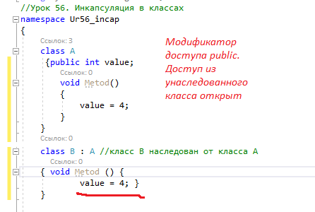
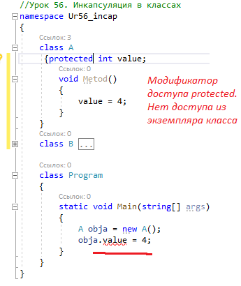
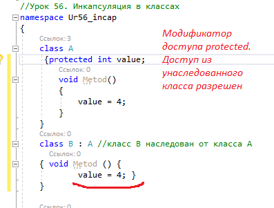
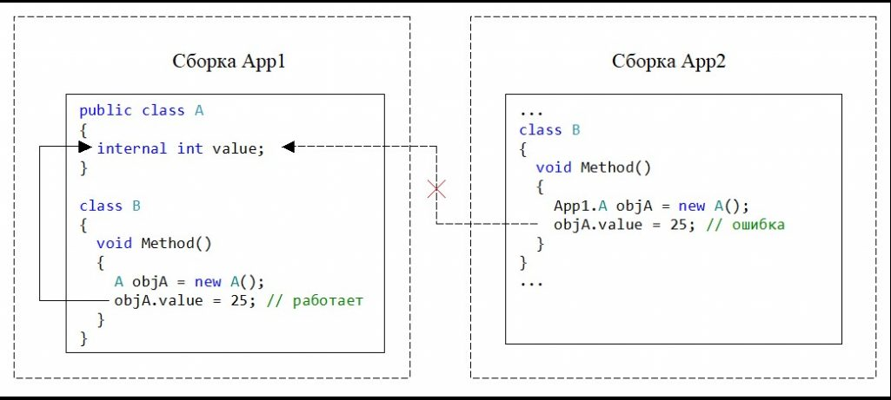
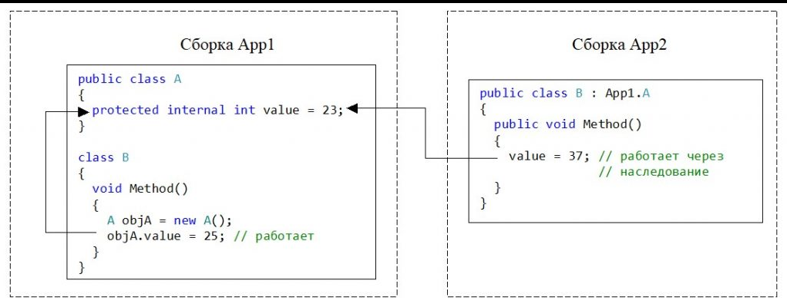
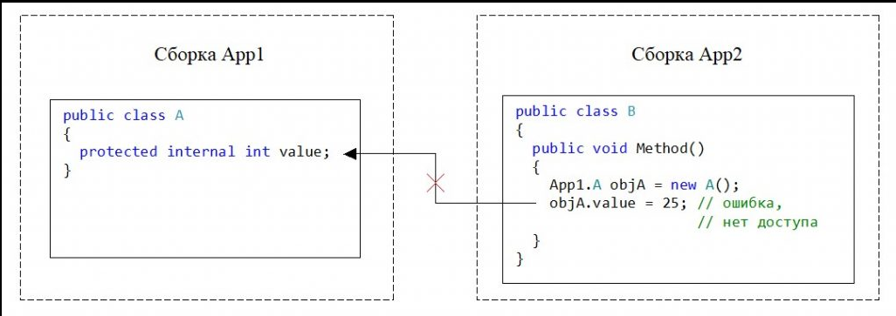

| Тема 1. Инкапсуляция в классах. Категории модификаторов доступа (повторение) | ||
| Назад | ||
1. Категории модификаторов доступаПри использовании классов в языке C# используют модификаторы доступа, которые делятся на две категории:
2. Модификаторы доступа для классаЕсли в программе объявляется класс, то этот класс может иметь один из двух модификаторов доступа:
Модификатор доступа для класса ставится перед ключевым словом class: access_modifier class ClassName { // ... } здесь
Класс можно объявлять без указания модификатора доступа. В этом случае, по умолчанию принимается internal модификатор для класса. Например. // Класс, который доступен за пределами сборки public class MyPublicClass { // ... } // Класс, который доступен только в пределах текущей сборки internal class MyInternalClass { // ... } 3. Модификаторы доступа для элемента (члена) классаЕсли в классе объявляется элемент (метод, член данных и т.п.), то перед ним указывается модификатор доступа. Этот модификатор определяет уровень ограничения доступа к элементу класса. Язык C# предлагает следующие модификаторы доступа:
Модификаторы доступа protected и protected internal используются при наследовании. Элемент класса также может быть объявлен без модификатора. В этом случае принимается private уровень доступа к элементу класса. 4. Ключевое слово private. Особенности использованияЕсли в классе объявляется элемент (метод, член данных, ссылки и т.д.) с модификатором доступа private, то для него действуют следующие правила доступа:
 Рисунок 1. Модификатор доступа private. Нет доступа из экземпляра класса к private-элементу value
 Рисунок 2. Модификатор доступа private. Нет доступа из унаследованного класса к private-элементу класа value
 Рисунок 3. Модификатор доступа private. Доступ из внутренних методов класса к private-элементу 5. Ключевое слово public. РисунокПри объявлении элемента класса с ключевым словом public действуют следующие правила:
 Рисунок 4. Модификатор доступа public. Доступ из экземпляра класса к public-члену класса value
 Рисунок 5. Модификатор доступа public. Доступ из унаследованного класса 6. Ключевое слово protected. РисунокЕсли в классе объявляется элемент (метод, член данных и т.п.) с модификатором protected, то действуют следующие ограничения доступа:
 Рисунок 6. Модификатор доступа protected. Нет доступа из экземпляра класса
 Рисунок 7. Модификатор доступа protected. Доступ из унаследованного класса 7. Ключевое слово internal. РисунокЕсли элемент (метод, член данных и т.д.) класса объявлен с ключевым словом internal, то действуют следующие правила доступа:
 Рисунок 8. Модификатор доступа internal. Нет доступа из другой сборки 8. Модификатор доступа protected internal. РисунокЕсли в классе объявляется элемент с модификатором доступа protected internal, то действуют следующие правила:
 Рисунок 9. Доступ к переменной value из метода унаследованного класса B другой сборки App2
 Рисунок 10. Нет доступа к value из экземпляра класса другой сборки Конечно, чтобы из сборки App2 получить доступ к сборке App1 нужно эту сборку предварительно подключить средствами Microsoft Visual Studio. |
||
| Конспект подготовлен Бакулиным А. М. 2022 год. | ||